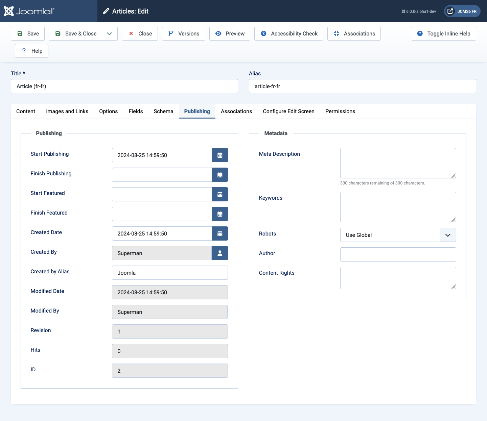

Many components allow specification of publishing date options for each item,
typically when to start or end publishing. Articles, Banners, Contacts and
perhaps more have a Publishing tab.
Item Metadata is also included in the Publishing tab. This takes priority over
Metadata in Menus or in the Global Configuration. It is important to complete
the Metadata description or your site may have many pages with the
same description. This could have an adverse effect on SEO.
Example
The Articles Publishing tab:

Most form fields have default values allow the item to be saved. You may wish
to take appropriate action for the following fields:
Meta Description: It is in your own interests to describe the content of
this item in less tha 64 characters.
Keywords A feature of web pages abandoned by search engines years ago.
Leave empty unless you have a specific application that uses them.
Publishing panel
Start Publishing. Date and time to start publishing. Enter article
ahead of time and then have it published automatically at a future
time.
Finish Publishing. Date and time to finish publishing. The article
is automatically changed to Unpublished state at a future time.
Start Featured. Date and time to start featured state. Enter
article ahead of time and then have it featured automatically at a
future time.
Finish Featured. Date and time to finish featured state. The
article is automatically changed to Unfeatured state at a future time.
Created Date. The current time when the Article was created. Enter
in a different date and time or click on the calendar icon to find the
desired date.
Created By. Name of the User who created this Article. This will
default to the currently logged-in user. If you want to change this to
a different user, click the Select User button.
Created by Alias. Enter in an alias for the Author of this
Article. This allows you to display a different Author name.
Modified Date. Date of last modification.
Modified By. Username who performed the last modification.
Revision. Number of revisions to this Article.
Hits. The number of times this Article has been viewed.
ID. A unique identification number for this Article, you cannot
change this number. When creating a new Article, this field displays
"0" until you save the new entry.
Metadata panel
Meta Description. An paragraph to be used as the description of
the page.
Keywords. Entry for keywords.
Robots. The instructions for web 'robots' that browse to this
page. Set 'Use Global' in Global Configuration.
Author. Entry for an Author name within the metadata.
Content Rights. Describe what rights others have to use this
content.